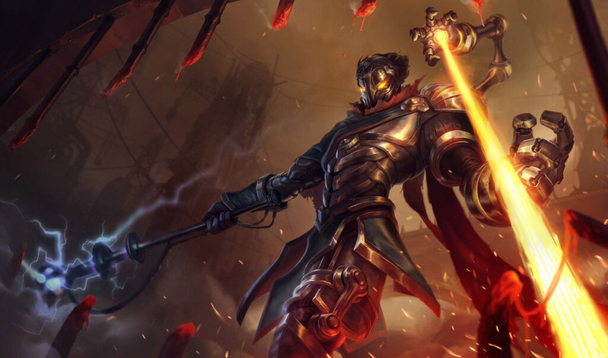
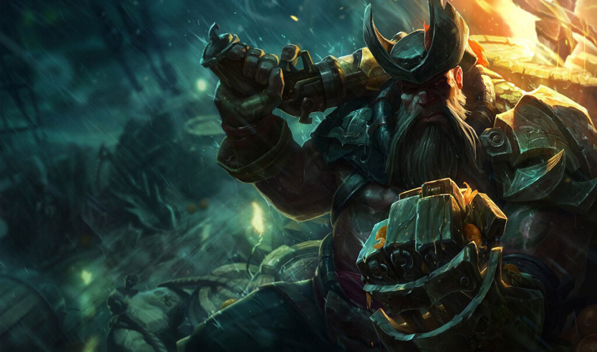

Meta Watch: Dealing with Viktor, Gangplank & Blitzcrank
While the western pro scene has finished up the Spring Split and crowned new kings, you can be sure that here at Meta Watch, we’re far from done.

Continuing our endeavors, here are three more champions that we will help you beat in your games.
Hasta La Vista, Baby
Seeing increased play in both pro leagues and soloQ, Viktor has risen up as a surprisingly solid control mage. After being picked thrice in the LEC finals between Rogue and Mad Lions, this comes as no surprise. However, there are some very clear weaknesses in his kit that stop him from being S-tier.
First things first. Viktor fits the description of a typical mage. Immobility, scaling and very minor peeling tools. This description should instantly scream using assassins against him. Most of his hardest matchups are champions with multiple mobility tools and gap closers. Ekko, Talon or even Tristana come to mind here.
Since Viktor scales extremely well, it’s imperative you take him down early on. Viktor tends to do very well in matchups where he’s safe from enemy engage options, and becomes an extreme menace when the teamfighting starts. Because of his extremely strong waveclear with his upgraded laser, picking up waveclear to match this can help you become the roamer your team needs.
Gangplank – Yarr Harr, Fiddle-Dee-Dee!
The absolute classic toplane blindpick, who has never truly left the meta. Facing bad Gangplank players is an absolute joy, as they are extremely punishable with their lack of mobility and comeback tools. Facing a good Gangplank is an utter nightmare, and sometimes feels impossible to play against. So what exactly is the answer to such a strong blind pick?
Your first option is to pick up powerful soakers of damage. Ornn, Riven and Garen all fit the same idea: They can survive the incoming onslaught of Parrrrleys coming your way, and proceed to all-in at level 6, where Gangplank is at his weakest, as his ultimate simply does not help him win 1v1s.
Another option is to simply do what he does, but better. Champions like Vladimir, Rumble and Ryze can very quickly take over the lane as soon as they pick up their first items, as they will simply answer poke damage with even more poke damage. We don’t see these champions often, as toplaners who play these champions are rare, but they’re exquisite answers to the pirate captain.
Most champions have a “golden counter”. Today, and once again, that counter is Yorick, who can completely destroy Gangplank in lane, which is why Gangplank mains have started banning Yorick ever since the buffs. After all, you simply can’t orange death.